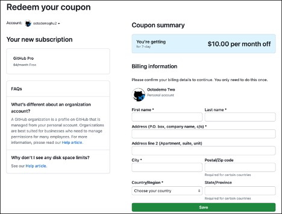
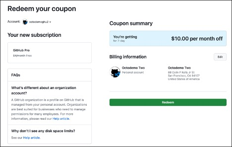
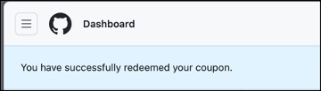
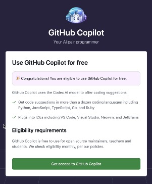
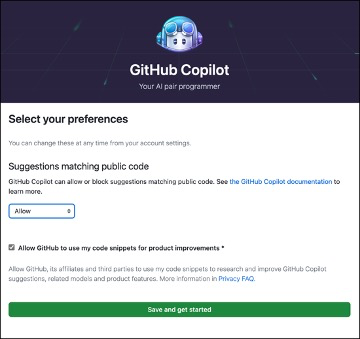
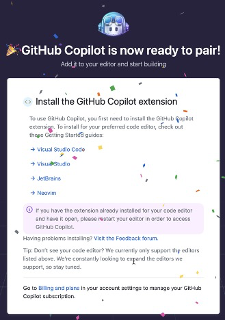

欢迎来到Copilot冒险！这个编程冒险系列旨在通过使用GitHub Copilot帮助你编写代码来学习新概念和语言。我们开始吧！
选择你的Copilot冒险

1. 进入冒险竞技场
首先，通过点击下面的按钮进入“冒险竞技场”。这将创建一个你可以工作的GitHub Codespace。一旦加载完毕，选择创建codespace按钮。

注意： 你每月可以免费使用60小时的GitHub Codespaces 免费。
如果你愿意，你可以克隆库并在本地运行：
git clone https://github.com/microsoft/copilotadventures
2. 选择一次冒险
先决条件： 具有编程语言的基础知识会很有帮助。
GitHub Copilot新手？
如果你是GitHub Copilot的新手，需安装扩展并且想学习如何开始使用它，请从热身冒险开始。
完成热身冒险并安装好扩展后，从以下GitHub Copilot冒险列表中选择另一个冒险：
初级冒险
中级冒险
高级冒险
3. 开始编程
阅读你的Copilot冒险描述、高层次任务以及GitHub Copilot为帮助你编写代码提供的建议。
- 使用GitHub Copilot和/或GitHub Copilot聊天来帮助你编写冒险代码。你可以使用任何你喜欢的语言。如果准备好挑战，尝试学习一种新语言（更多信息在上方）！
- 在代码中留下注释，解释你的思考过程并展示GitHub Copilot用来帮助你的建议。
4. 提交你的冒险解决方案（可选）
如果你想与他人分享你的解决方案，请执行以下步骤：
- 在GitHub上发布你的冒险解决方案库。
- 访问https://github.com/microsoft/CopilotAdventures/issues 并选择
新问题。 -
使用以下命名规范为问题标题命名。
[你的冒险名称]解决方案将
[你的冒险名称]替换为你选择解决的冒险名称（例如：Stonevale的传奇决斗）。 -
在正文部分添加你的GitHub库链接。
- 如果你有任何反馈，请分享你的发现（好与不好）。我们很想知道你的反馈！
后续步骤：学习一种新语言或为你的冒险创建用户界面

完成你的首次冒险后，可以再次尝试但这次使用GitHub Copilot完成一个你不熟悉的语言的冒险。例如，如果你通常使用C#编写代码，用Copilot帮助你使用Python或你想了解更多的其他语言解决这个冒险。
尝试为你的冒险创建一个用户界面。使用纯HTML/CSS/JavaScript或你选择的库/框架。让GitHub Copilot/聊天来帮助你编写的用户界面代码。如果你的用户界面需要图像，考虑使用Bing Image Creator或其他AI图像生成服务。
有一个Copilot冒险创意？提交一个PR！
你有一个故事/谜题想为其他人提议成为Copilot冒险吗？我们希望看到！向这个仓库提交一个pull request，其中包含你的冒险和解决方案。
- 使用
新Copilot冒险：[你的冒险名字]作为PR的标题。将[你的冒险名字]替换成你的冒险名称。 - 表明你的冒险是初级、中级还是高级。
- 在创建你的冒险时遵循在冒险文件夹中的每次冒险使用的markdown模板。
- 提供你的冒险图像（使用Bing Image Creator或其他图像生成器）。
- 使用你喜欢的语言提供解决方案。将所有代码放在一个文件中（为了简化）并包含在PR中。
我们将审核你的提议，如果符合标准，我们会将它合并到存储库中。
GitHub Copilot研讨会优惠券兑换说明
-
登录GitHub。
-
访问https://github.com/redeem/XXX-YYY，其中XXX-YYY是你的研讨会优惠券代码。

-
填写你的地址。你将不需输入信用卡。
-
选择
保存。 -
在优惠券摘要页面，选择
兑换。
-
你应该在GitHub的仪表板上收到一条消息。

-
访问https://gh.io/copilot-free。兑换优惠券后需要执行此步骤。在你注册并配置偏好之前，你无法访问GitHub Copilot。
-
选择
获取GitHub Copilot访问权限。
-
选择工作坊所需的设置（例如选择
允许）然后选择保存并开始。
-
你现在应该可以访问GitHub Copilot 7天！
